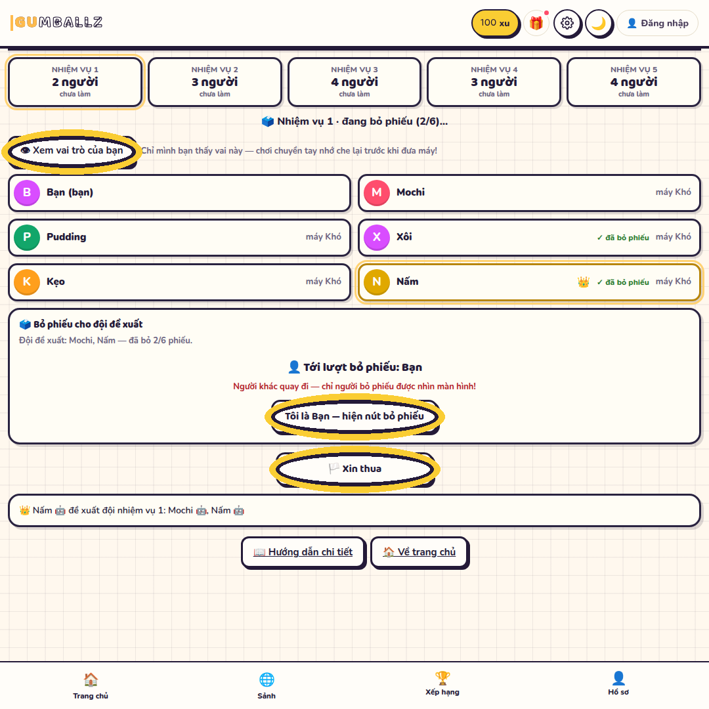

Avalon là trò suy luận phe phái: bàn chơi có 5–10 người, chia thành 🛡️ phe Thiện (các hiệp sĩ của vua Arthur) và 😈 phe Ác (tay chân của Mordred). Không ai biết vai của người khác — trừ vài vai đặc biệt. Cả bàn cùng làm 5 nhiệm vụ: phe Thiện thắng khi làm thành công 3 nhiệm vụ, phe Ác thắng khi phá hỏng 3 nhiệm vụ (hoặc khi 5 lần đề xuất đội liên tiếp bị bác).
1. Vai trò (chia ngẫu nhiên, mỗi người chỉ biết vai của mình)
- 🧙 Merlin (Thiện): thấy hết phe Ác — trừ Mordred. Merlin biết ai xấu, nhưng lộ mình là bị ám sát!
- 🛡️ Percival (Thiện): thấy Merlin và Morgana — nhưng không biết ai là ai. Nhiệm vụ của Percival là bảo vệ Merlin.
- ⚔️ Hiệp sĩ trung thành (Thiện): không biết gì thêm — chỉ tin vào lá phiếu và trực giác.
- 🗡️ Sát thủ (Ác): nếu phe Thiện thắng 3 nhiệm vụ, Sát thủ được đoán ai là Merlin — đúng thì phe Ác lật kèo thắng!
- 🔮 Morgana (Ác): hiện ra như Merlin trước mắt Percival.
- 😈 Mordred (Ác, từ 7 người): ẩn mình khỏi tầm nhìn của Merlin.
- 👤 Oberon (Ác, 9 người): không biết ai, và không ai biết mình.
- 🐺 Tay sai Mordred (Ác, 10 người): biết các phe Ác khác — trừ Oberon.
Chia vai theo số người (tỉ lệ chuẩn, phe Thiện luôn đa số): 5 người (3 Thiện/2 Ác): Merlin, Percival, Hiệp sĩ — Sát thủ, Morgana · 6 người (4/2): + Hiệp sĩ · 7 người (4/3): + Mordred · 8 người (5/3): + Hiệp sĩ · 9 người (6/3): + Oberon (thay Mordred — phe Ác mất liên lạc) · 10 người (6/4): + Mordred và Tay sai Mordred. Vai đặc biệt thay thế Hiệp sĩ/Tay sai cùng phe, không cộng thêm người — vì vậy không bao giờ có chuyện phe Ác đông hơn phe Thiện.
2. Một nhiệm vụ (lặp 5 lần)
- 👑 Thủ lĩnh chọn đội: thủ lĩnh (đổi mỗi nhiệm vụ) bấm chọn đúng số người của nhiệm vụ rồi bấm “Đề xuất đội”.
- 🗳️ Cả bàn bỏ phiếu Thuận/Chống: quá bán Thuận thì đội được duyệt; hòa hoặc ít hơn thì đội bị bác — thủ lĩnh đổi sang người kế tiếp. 5 lần bác liên tiếp thì phe Ác thắng ngay.
- ⚔️ Đội làm nhiệm vụ: từng thành viên trong đội bí mật chọn Thành công hoặc Thất bại — phe Thiện bắt buộc Thành công, phe Ác được chọn Thất bại để phá. Chỉ công bố số lần thất bại, không nói ai đã phá.
- Thắng nhiệm vụ: nhiệm vụ thành công khi số lần thất bại dưới ngưỡng (thường là 1; riêng nhiệm vụ 4 ở 7+ người cần 2 lần thất bại mới hỏng).
3. Số người mỗi nhiệm vụ
- 5 người: 2, 3, 2, 3, 3 · 6 người: 2, 3, 4, 3, 4 · 7 người: 2, 3, 3, 4*, 4
- 8 người: 3, 4, 4, 5*, 5 · 9 người: 3, 4, 4, 5*, 5 · 10 người: 3, 4, 4, 5*, 5
- (* nhiệm vụ 4 ở 7+ người: cần 2 lần thất bại mới hỏng)
4. Kết thúc ván
- Phe Ác phá hỏng 3 nhiệm vụ → phe Ác thắng ngay.
- Phe Thiện thắng 3 nhiệm vụ → Sát thủ đoán Merlin: đúng thì phe Ác lật kèo thắng, sai thì phe Thiện thắng.
- 5 lần đề xuất bị bác liên tiếp → phe Ác thắng.
- Xin thua: phe của người xin thua thua luôn.
5. Mẹo chơi
- Merlin: đừng lộ mình quá sớm — hãy bác đội có Ác bằng lý do khác (“đội này lạ lắm”), đừng lúc nào cũng đúng 100%.
- Percival: bạn thấy 2 người “giống Merlin” — một là Merlin thật, một là Morgana. Hãy để ý ai hay bác đội xấu.
- Phe Ác: đừng phá nhiệm vụ đầu quá lộ — phá 1 mình ở nhiệm vụ cần 2 lần thất bại là vừa vô ích vừa lộ mặt.
- Thủ lĩnh: chọn đội toàn người mình tin — nhiệm vụ 4 ở 7+ người là ải khó nhất vì cần tới 2 kẻ phá.
6. Chế độ chơi
- 🌐 Online: tạo phòng, gửi mã 5 ký tự cho bạn vào chơi cùng (5–10 người). Vai trò của mỗi người chỉ hiện trên máy của người đó.
- 🤖 Chơi với máy: bạn + 4 máy (hoặc chọn 5–10 người, máy điền cho đủ). Máy Dễ chơi ngẫu nhiên có thiên vị, Máy Khó biết né Ác, phá đúng lúc và đoán Merlin theo dấu vết bỏ phiếu.
- 👥 5–10 người chung máy: thêm người trong phòng chờ rồi chuyền máy cho nhau. Mỗi người bấm “👁 Xem vai trò” để xem vai của mình rồi che lại trước khi đưa máy — bỏ phiếu và chọn Thành công/Thất bại đều làm lần lượt, người khác quay đi!